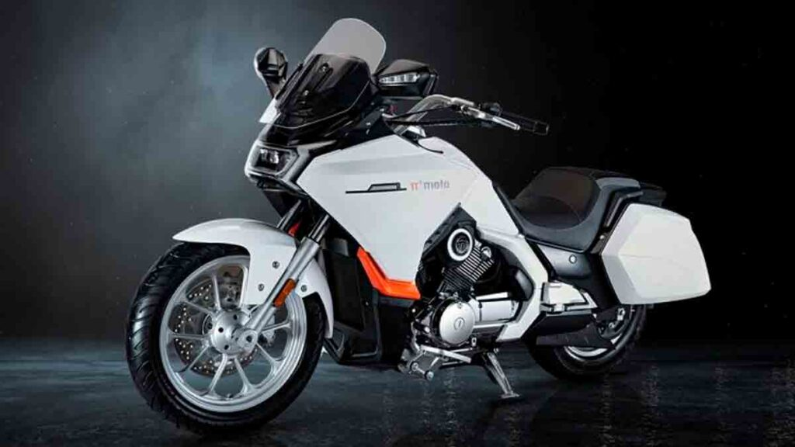
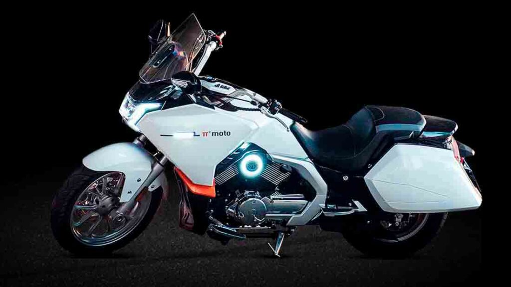
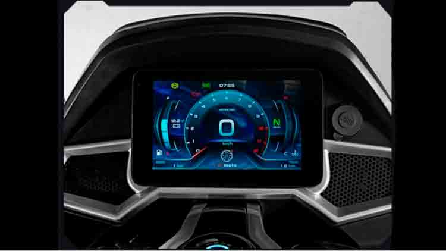
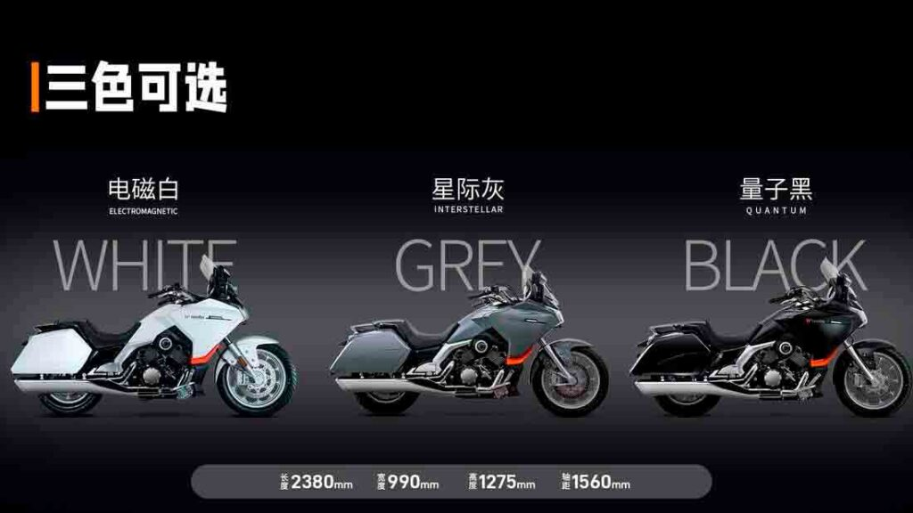

Dona da Volvo lança nova marca de motocicletas PFMoto/pi
Você compraria uma moto da empresa proprietária da Volvo? A Geely, que também é proprietária da Lifan e da Benelli (e partes do Grupo Mercedes-Benz), lançou a nova marca PFMoto. O primeiro modelo da plataforma de lançamento é o Starship 3.
O PF significa Paifang e a marca provavelmente faz parte do conhecido fabricante de motores Lifan. A marca tem um logotipo interessante – a letra grega pi, quadrada, que segundo o fabricante significa uma “continuação eterna em uso”.
O lançamento da marca aconteceu no dia 16 de agosto com uma imagem teaser renderizada da Starship 3, uma moto de turismo ao que parece bem completa.
A Starship se parece muito com um tourer como a Honda PanEuropean ST1300, cruzado com uma moto de turismo americana; é impulsionada por um motor em V.
Muitos elementos clássicos das grandes motos de turismo definem a moto: alforjes que lembram os de uma grande BMW, uma frente que se parece com uma PanEuropean, além de um grande banco do piloto como uma Goldwing.
A grande diferença com o Starship 3 é o seu motor de apenas 304cc, fornecendo 32cv a 9.000rpm e 27,5Nm de troque a 7.000rpm. O motor de longo curso refrigerado a líquido tem uma taxa de compressão suave de 11:1, o que seria útil em locais onde a qualidade do combustível é duvidosa. O peso não é informado, mas o consumo de combustível é de 28 km/l, com tanque de 15 litros de capacidade. A altura do assento é de 695 milímetros.

Um dado negativo foi a distância de frenagem está informada como 20 metros de 60km/h a zero. Outras motocicletas, muito mais pesadas, alcançam distâncias significativamente melhores. Uma contribuição óbvia para a distância vem dos pneus estreitos, 120/80-18 dianteiro e 150/80-15 traseiro.

O grande display TFT parece impressionante, e os vários botões e configurações indicadas sugerem um extenso menu eletrônico. Nenhum preço foi listado ainda, mas espera-se que seja altamente competitivo em qualquer mercado em que a moto apareça.
